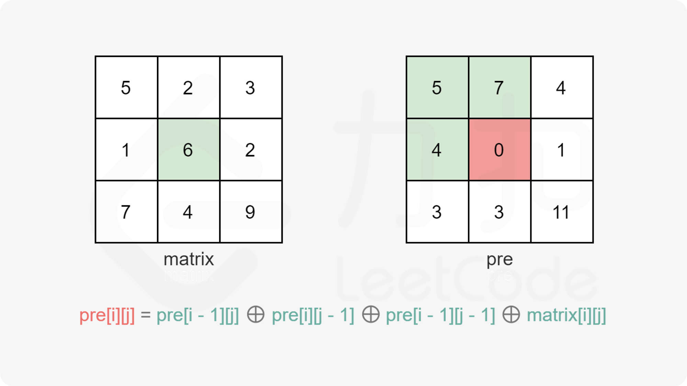

https://leetcode-cn.com/problems/find-kth-largest-xor-coordinate-value/
给你一个二维矩阵 matrix 和一个整数 k ，矩阵大小为 m x n 由非负整数组成。
矩阵中坐标 (a, b) 的 值 可由对所有满足 0 <= i <= a < m 且 0 <= j <= b < n 的元素 matrix[i][j]（下标从 0 开始计数）执行异或运算得到。
请你找出 matrix 的所有坐标中第 k 大的值（k 的值从 1 开始计数）。
示例 1：
输入：matrix = [[5,2],[1,6]], k = 1
输出：7
解释：坐标 (0,1) 的值是 5 XOR 2 = 7 ，为最大的值。
1 | class Solution { |
关键点
还是要先理解题意
矩阵中坐标 (a, b) 的 值 可由对所有满足 0 <= i <= a < m 且 0 <= j <= b < n 的元素
matrix[i][j]（下标从 0 开始计数）执行异或运算得到。
上面关键这句，理解起来略有点抽象，其实说白了，也就是说现在我们有另外一个矩阵 pre，则 pre[a][b] 的值就等于 matrix 这个矩阵中，由 matrix[0][0] … ^ matrix[a][b] 的结果

比如说如上图，其中 pre[1][1] = matrix[0][0] ^ matrix[0][1] ^ matrix[1][0] ^ matrix[1][1]，也就是等于 matrix 中的小矩阵(i=0~a, j=0~b)中全部元素的异或结果。
那 pre[i][j] = pre[i - 1][j] ^ pre[i][j - 1] ^ pre[i - 1][j - 1] ^ matrix[i - 1][j - 1]; 是怎么解释？
如图：
当我们要求 pre[a, b] 时，可以看到，它的结果是 matrix 中全部元素的异或
在二维前缀和的计算过程中，如果我们正在计算首行或者首列，即 i=0 或 j=0，此时例如 pre(i−1,j−1) 是一个超出下标范围的结果。因此我们可以使用一个 (m+1)×(n+1) 的二维矩阵，将首行和首列空出来赋予默认值 0，并使用接下来的 m 行和 n 列存储二维前缀和，这样就不必进行下标范围的判断了。
也就是说我们实际求得的 pre 数组是这个样子的：
关键来了，pre[a-1, b-1] ^ pre[a-1, b] ^ pre[a, b-1]，可以看到中间公式部分重复出现了3次，由于异或的特性：
a ^ a ^ a = 0 ^ a
= a
所以 pre[a-1, b-1] ^ pre[a-1, b] ^ pre[a, b-1] 就相当于是除了 matrix[a, b] 之外，
其它坐标的值的异或了。再异或上 matrix[a, b]，即为需要求得的 pre[a, b] 的值。
对这个题目来说，最关键的就是上面部分。其次还有一个重点，就是求第 k 大的值。这又是另外一个题目的解法，需要扩展一下。